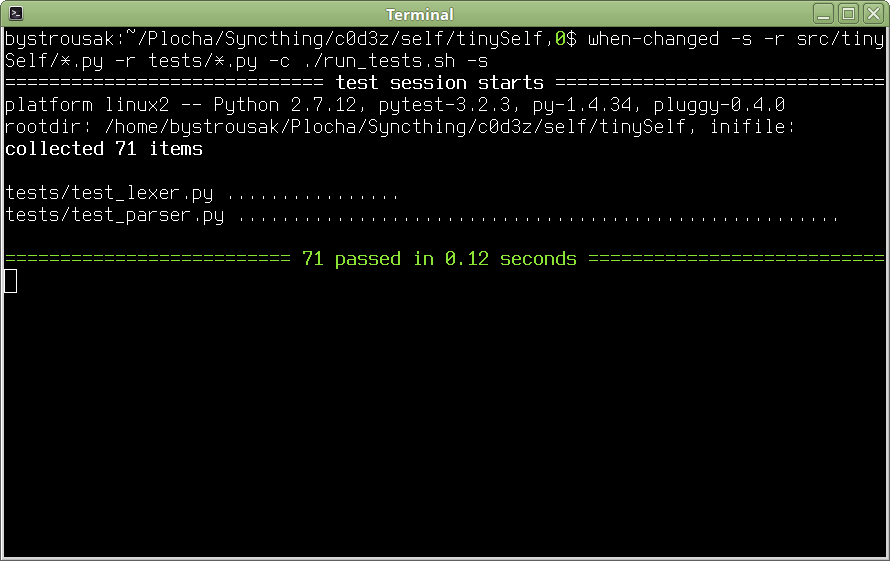

Ve třetím dílu seriálu Jak se píše programovací jazyk se podíváme na jakým způsobem se z jednorozměrného pole Token objektů, udělá syntaktický strom, který pak následně můžeme dále zpracovávat a vyhodnocovat.
Jak bylo popsáno v minulém dílu, Lexer vám kód rozřeže na pole jednotlivých elementů. V mém případě z kódu jako:
(| asd = 1 | ^asd.)
udělá pole ve stylu:
[
Token("OBJ_START", "("),
Token("SEPARATOR", "|"),
Token("IDENTIFIER", "asd"),
Token("ASSIGNMENT", "="),
Token("NUMBER", "1"),
Token("SEPARATOR", "|"),
Token("RETURN", "^"),
Token("IDENTIFIER", "asd"),
Token("OBJ_END", ")")
]
Jde o seznam Token objektů, kde v property .name je uložen název tokenu (například „IDENTIFIER“) a v .value jeho hodnota (například „asd“). Na parseru je poté kód vzít a udělat z něj AST (abstraktní syntaktický strom) ve stylu:
Object(
slots={"asd": Number(1)},
params=[],
parents={},
code=[
Return(
Send(Self(), Message("asd"))
)
],
)
Na to jak je tinySelf jednoduchý jazyk mi dal parser docela zabrat. Původně jsem ho začal psát v RPythonním rpython.rlib.parsing.ebnfparse, což vypadalo opticky dobře a jednoduše:
IGNORE: " |\n";
root: (expression ["\."])* expression;
object: ["("] slots? sends* [")"];
block: ["["] slots? sends* ["]"];
return: ["^"] expression;
expression: IDENTIFIER | value | object | block | send;
#sends: (send ["\."])* send ["\."]?;
sends: (expression ["\."])* expression ["\."]?;
send: (receiver? keyword) | (receiver? message) | (receiver? receiver? operator receiver);
receiver: IDENTIFIER | object | block;
message: IDENTIFIER;
keyword: FIRST_KW_IDENTIFIER >expression< (KEYWORD_IDENTIFIER >expression<)*;
operator: operator_characters+;
operator_characters: "!" | "@" | "#" | "$" | "%" | "&" | "*" | "-" | "+" | \
"=" | "~" | "/" | "?" | "<" | ">" | "," | ";";
slots: ["|"] (>slot_definition< ["\."])* >slot_definition<? ["\."]? ["|"];
slot_definition: IDENTIFIER | (FIRST_KW_IDENTIFIER >expression<) | ARGUMENT;
value: <string> | <float> | <integer>;
float: integer "\." POSINT;
integer: "\-" POSINT | POSINT;
POSINT: "0|[1-9][0-9]*";
ARGUMENT: ":[a-z_][a-zA-Z0-9_\*]*";
IDENTIFIER: "[a-z_][a-zA-Z0-9_\*]*";
FIRST_KW_IDENTIFIER: "[a-z_][a-zA-Z0-9_]*:";
KEYWORD_IDENTIFIER: "[A-Z][a-zA-Z0-9_]*:";
string: SINGLE_QUOTED_STRING | DOUBLE_QUOTED_STRING;
SINGLE_QUOTED_STRING: "'[^\\\']*'";
DOUBLE_QUOTED_STRING: "\\"[^\\\\"]*\\"";
Poměrně záhy jsem však narazil na nedostatek dokumentace a taky na chování, které mi vysloveně vadilo (všechny ty >< a <> kolem identifikátorů, divná rekurze s |, mixování s reguláry atd..). Od začátku jsem to pojal jako TDD development (psatní testů před kódem) a jen díky tomu jsem se z toho nezcvokl, neměl jsem k tomu však daleko.
Bystřejší čtenáři si jistě všimli, že v kódu jsou použity jiné tokeny, než v předchozím díle. Je tomu tak proto, že ebnfparse umožňuje definovat tokeny zároveň s parserem, což rply neumožňuje a to co bylo uvedeno v minulém díle je má pozdější snaha.
Chybějící dokumentace mě časem donutila od RPythonního ebnfparse odejít, speciálně když jsem si procházel ostatní projekty, které používaly jiné parsery. Časem jsem narazil na rply, což port parseru ply přímo pro RPython. Funguje tak, že píšete dekorátory funkcím ve stylu:
@pg.production('expression : NUMBER')
def expression_number(p):
return Number(int(p[0].getstr()))
Dekorátor určuje pattern z tokenů. Dekorovaná funkce pak co se s tokeny provede. Všechny tokeny jsou předány v poli v proměnné ‚p‘.
V kódu nahoře se vezme první token (index 0) a vratí se objekt Number s tokenem, jehož hodnota byla převedena na číslo.
Number není žádný magický objekt, nadefinoval jsem si ho sám po vzoru ostatních parserů. Dohromady mám tyto objekty, ze kterých se sestavuje syntaktický strom:
Jak je vidět, v tinySelfu existují pouze objekty, bloky, akt poslání zprávy, přeposlání zprávy, kaskáda zpráv (akt poslání několika zpráv jednomu objektu), návrat hodnoty, tři typy zpráv (unární, binární, keyword) a poté čtyři zkratky pro často používané objekty: čísla, stringy, Self a Nil. Self by existovat teoreticky nemusel, mohla by to být jen Message("self") poslaná nikomu, ale zpřehledňuje to kód i výsledný strom. Nil je jen zkratka pro singleton, který by mohl být uložený v globálním namespace.
Zde je ukázka složitějšího transformačního pravidla:
@pg.production('expression : IDENTIFIER')
def unary_message(p):
return Send(obj=Self(), msg=Message(p[0].getstr()))
@pg.production('expression : expression IDENTIFIER')
def unary_message_to_expression(p):
return Send(obj=p[0], msg=Message(p[1].getstr()))
Na ukázce je dobře vidět, jak vzniká poslání zpráv a jak je řešeno vkládání implicitního Selfu. Pokud je identifikátor poslán zdánlivě ničemu, je aktu poslání zprávy předán jako cíl Self(). Pokud je před identifikátorem nějaký výraz, je cíli poslání zprávy předán první token obsahující tento výraz (což už je naparsovaná expression, tedy prvek AST).
Podobnými pravidly je složen celý jazyk. Zde je také hezky vidět rekurzivní povaha parseru, který definuje expression jako identifikátor a poté také jako expression následované identifikátorem. Parser takhle provede rekurzivní pattern matching na všechny odpovídající tokeny, v samotných funkcích se pak jen definuje, co se z toho má složit za AST.
Tenhle přístup má svou výhodu, protože vám dovoluje skládat AST přímo tak jak ho chcete. Předtím používaný ebnf z RPythonu vypadal sice zapsán elegantněji jako jeden krásný string, ale neumožňoval žádné skoro žádné manipupace s AST a vyplivl vám strom z tokenů, který bylo dále třeba zpracovávat. I když to bylo na vyšší úrovni, než samotné pole tokenů, stejně to byl masivní opruz. Oproti tomu přímý přístup k datům v rply vám umožňuje vygenerovat rovnou hotový a upravený AST.
Zde je zdrojový kód celého parseru:Nikdy dřív jsem nepsal EBNF parser a musím říct, že to pro mě bylo docela utrpení. Naučit se přemýšlet v rekurzivně skládaných definicích mi dalo zabrat, a to ani nemluvím o tom, že jsem pro Self nenašel žádnou EBNF definici, takže jsem si jí podle manuálu +- skládal sám.
Nakonec se však povedlo a kód prošel všemi testy, které jsem pro něj napsal. Myslel jsem si, že tím to pro mě končí, ale jak se ukázalo, byl to jen začátek další parsovací bolesti, tentokrát se týkající snahy kód upravit tak, aby šel přeložit RPythonem.
{kind=link}